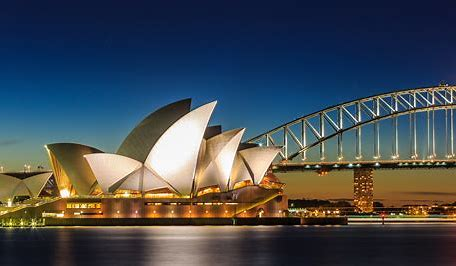

Australia is one of the most multicultural countries in the world, and home to the world's oldest continuing culture. They have a highly skilled workforce and a proud history of democracy and stable government.
Australia's Indigenous peoples have lived on and managed the land for more than 60,000 years however, the early treatment of Australia's Indigenous population was marked by conflict and mistreatment.
Since the 1960s successive Australian Governments have joined with Aboriginal and Torres Strait Islander peoples to work towards reconciliation.
In 2008, the Australian Parliament passed a motion of Apology to Indigenous Australians for past mistreatment and injustices, especially the Stolen Generations, who were Indigenous children forcibly removed from their families. National Sorry Day is held every year on 26 May to remember and acknowledge this mistreatment. In July each year, NAIDOC Week celebrations mark the history, culture and achievements of Aboriginal and Torres Strait Islander peoples.
In the 1850s gold was discovered and the gold rush that followed brought people to Australia from all over the world.
n 1901, Australia became a nation, forming the Commonwealth of Australia. One year later, Australia became one of the first countries in the world to give women the right to vote.
In 1945, Australia became a founding member of the United Nations.
They take our international responsibilities seriously and work closely with other countries to promote peace and security. Since 1947, over 65,000 Australians have served in more than 50 peace and security operations around the world.
They have a strong and open economy.
Before the COVID-19 pandemic in 2020, Australia recorded 28 straight years of annual economic growth and was the world's 14th largest economy.
Following the COVID-19 pandemic, we continue to assist countries in the Indo-Pacific to access safe and effective COVID-19 vaccines. For example, our regional vaccine program ensures that Pacific countries achieve full COVID-19 vaccine coverage.
They also provide development assistance to developing countries to increase their economic growth and reduce poverty. In 2019-20, Australia provided $4 billion in development assistance — this included $1.4 billion to the Pacific.
Today their are home to 25 million people from almost 200 countries.
All Australians have access to quality and affordable health care for both physical and mental health.
Over 30 per cent of the Australian resident population were born overseas. While English is the national language, more than 300 languages are spoken in Australian homes. The top five (excluding English) are Mandarin, Arabic, Cantonese, Vietnamese, and Italian.
